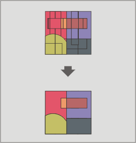

Dissolvi
Questo geoprocesso agisce su un unico layer di input. Il processo analizza tutti gli elementi del layer di input e fonde in un unico elemento tutti quelli che presentano lo stesso valore di un dato attributo. E' inoltre possibile adottare un criterio spaziale di adiacenza degli elementi: due elementi possono essere fusi tra loro solo se, oltre a possedere un valore identico per l’attributo specificato, sono spazialmente adiacenti.

Esempio: Supponiamo di avere un layer di poligoni che rappresenta i comuni di una particolare regione e di voler generare il layer di poligoni delle province della stessa regione. Eseguendo il geoprocesso "Dissolvi" sul layer dei comuni e specificandovi che i poligoni che presentano lo stesso valore del campo PROV (contenente un codice univoco delle province) devono essere fusi, è possibile generare il layer delle province.